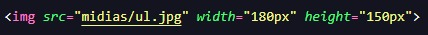

Para começar, devemos começar do... começo. As tags que veremos agora são tags que devem estar presentes em todo código HTML que digitamos. Para iniciar devemos sempre incluir a tag html, porém, para facilitar nosso trabalho podemos simplesmente digitar um "!" e depois teclar enter para que a base do código HTML seja escrita automaticamente.
Seguinto, temos a tag head, que nada mais é do que o header, o cabeçalho do nosso código. É nele que colocamos a taga title, que é o título que aparecerá na aba do navegador após abrir nosso site nele.
Por fim, temos a tag body, que é o corpo de nosso texto. É dentro desta tag que colocamos tudo que o nosso código HTML vai precisar, como imagens, vídeos, textos, listas, etc...
Bom, uma das coisas mais importantes nos sites que desenvolvemos é o texto. O texto no HTML possui diversas tags para podermos executar diversos objetivos.
A primeira TAG textual que veremos é a TAG h, uma TAG utilizada para escrevermos títulos em nossos sites. A TAG h é muito versátil e tem algumas variações. Indo de h1 até h6, a única diferença que ocorre entre elas é o tamanho no texto digitado dentro desta TAG.
A segunda TAG que veremos é a TAG p, uma TAG que usamos para escrever parágrafos em nossos sites. Ela não tem muito segredo e não tem variações, basicamente colocamos a tag p e dentro dela o texto que queremos escrever. A única particularidade dela é que sempre que precisamos escrever outros parágrafos devemos fechar esta tag p e novamente iniciar outro parágrafo utilizando outra tag p.
Outra TAG que utilizamos com frequência no HTML é a TAG br, utilizada para realizar quebras de linha.
Outra TAG utilizada no desenvolvimento de sites com HTML é a TAG hr, que projeta uma linha onde digitamos a TAG.
Esta TAG não é mais muito utilizada hoje em dia, porém continua funcionando como comando no HTML e pode ser bem divertido de brincar com ela. Estamos falando da TAG marquee, que basicamente faz com que o texto corra horizontalmente na tela.
Para deixarmos o texto em negrito, podemos utilizar não só um, mas dois comandos que basicamente não têm diferença entre si. O primeiro deles é a TAG strong.
A outra TAG que podemos utilizar para deixarmos um texto em negrito é a tag b que signigica bold
Outra TAG que podemos utilizar em nossos códigos HTML é a TAG i, de itálico. Basicamente a utiizamamos para deixar um texto inteiro ou parte dele em itálico.
Utilizamos a TAG u para sublinhar um texto inteiro ou parte dele.
Utilizamos a tag para grifar um texto inteiro ou parte dele.
Utilizamos a TAG blockquote para formatar o texto de forma um pouco diferente
Neste caso, ao utilizarmos esta TAG, podemos escrever um tipo de citação. A formatação basicamente fará com que o texto tenha um pequeno avanço da margem
Utilizamos as listas ordenadas e não ordenadas para escrever índices na tela. Podem ser muito versáteis, desde criar apenas listas ordenadas ou não ordenadas até desenvolver um menu para um site editando-o com o CSS posteriormente.
Utilizamos a TAG ol para escrevermos listas ordenadas, ou esja, os itens que estarão dentro desta tag estarão numerados do menor para o maior. porém, epanas o ol não vai funcionar. Para isto, devemos utilizar o li, que seriam os itens dentro da lista, como da forma demonstrada na imagem abaixo:
Da mesma forma que utilizamos o ol para escrever listas ordenadas, podemos utilizar o ul para escrever listas não ordenadas. Desta forma, a diferença é que os itens não estarão separados item por item com um número indicando sua posição, mas sim com pontos.
Como vimos acima, podemos incluir imagens em nossos sites através do HTML, mas como? Simples, basicamente precisamos utilizar a TAG img acompanhada do atributo src (search) para anexarmos a imagem. Podemos utilizar tanto um link da internet da imagem ou uma imagem vinda diretamente de nossa máquina.
Assim como as imagens, podemos também incluir vídeos em nossas páginas feitas com HTML. Basta utilizarmos a tag video
Podemos inserir campos para o usuário digitar informações, como texto ou números através da TAG input acompanhada do tipo do campo.